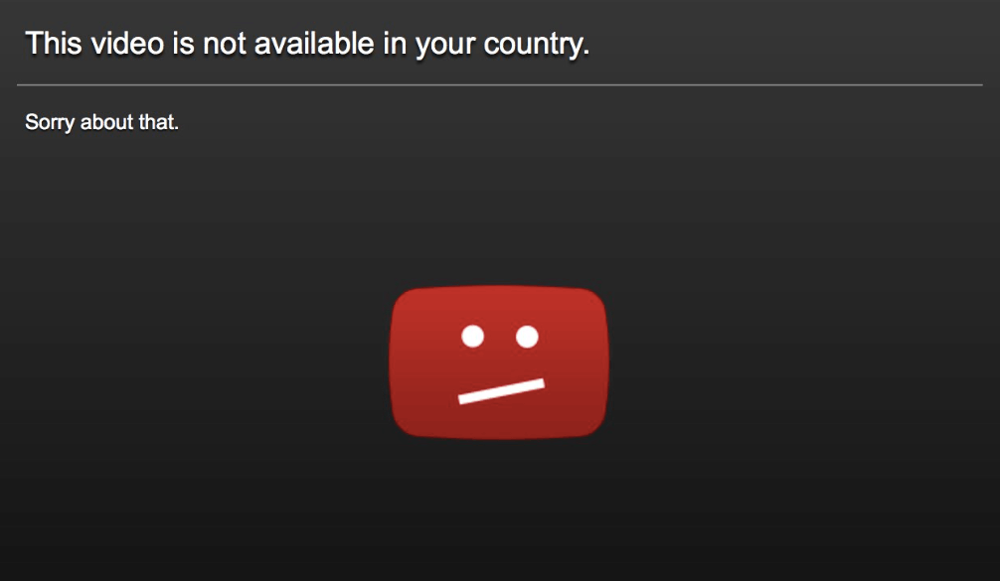
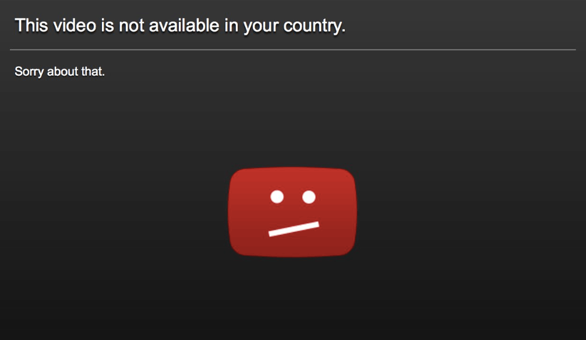

ü§ò a11y and u ü§ò
 

üëçüèª a11y == üëçüèª er'body
üê≥üê≥üê≥üêØüê≥
In the US, 1 in 5 adults have a disability

Impairment Temporalities
- temporary
- permanent
- situational
Impairment Categories
- visual
- motor
- hearing
- cognitive
ROBOTS ü§ñ
Web Content Accessibility Guidelines
- Perceivable
- Operable
- Understandable
- Robust
- Focus
- Semantic HTML
- Navigability
- ARIA
- Style üíÉüèΩ
good
tab order == dom order
expect it to be the same as visual order
nav content #1
modal content
danger you have done a bad
Managing Focus
// Use the focus() method to set focus
function showModal() {
...
var modal = document.getElementById('modal2');
modal.focus();
...
}
offscreen content
// for debugging
document.activeElement
/* for hidden elements */
.hide {
display: none;
}
.show {
display: block;
}
offscreen content
clearly defined boundaries
color only errors
Semantic HTML
role, name, state & value
label types
- visible
- text alternatives
text alternatives
Can't get no semantics
ARIA
Responsive Design
colour contrast
pa11y demo üê∂
npx pa11y www.thinkific.com
be the color contrast you wish to see in the world